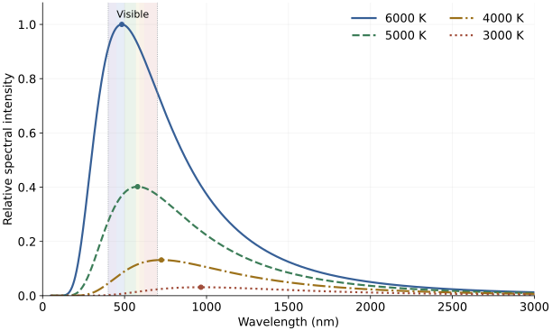
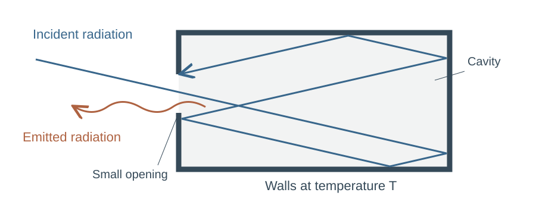
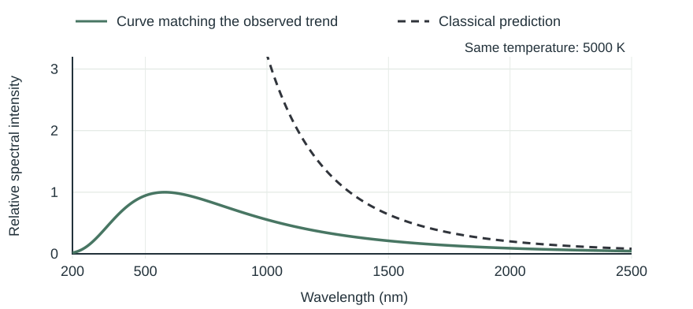

ฟิสิกส์ • บทที่ 19 ฟิสิกส์อะตอม
สังเกตภาพ อ่านกราฟ ค้นหาความสัมพันธ์ และสรุปแนวคิดสำคัญ
เติมเนื้อหาใต้หัวข้อ ตอบคำถามในกิจกรรม และแสดงวิธีทำในพื้นที่ว่าง
คำถาม 1
จากภาพทั้งสอง กล้องอินฟราเรดให้ข้อมูลอะไรเพิ่มเติมจากภาพที่ตามองเห็น?
พิจารณาวัตถุดำที่อุณหภูมิต่างกัน กราฟนี้วาดใหม่เพื่ออ่านแนวโน้มเดียวกับรูป 19.2 ในหนังสือ สสวท. จุดกลมระบุตำแหน่งยอดกราฟ

คำถาม 2
แกนนอนและแกนตั้งแสดงปริมาณใด?
คำถาม 3
อ่านค่าประมาณของความยาวคลื่นที่ยอดกราฟในแต่ละกรณี
ก. อุณหภูมิ 3000 K
ข. อุณหภูมิ 6000 K
คำถาม 4
เหล็กที่ร้อนจนเห็นเป็นสีส้ม แผ่รังสีเฉพาะแสงสีส้มหรือไม่? อธิบายจากกราฟ
เปลวไฟจากเตาแก๊สหุงต้ม ส่วนสีฟ้าน้ำเงินกับส่วนสีส้มแดง ส่วนใดร้อนกว่า? ชื่อสีโทนร้อน–เย็นในวิชาศิลปะบอกอุณหภูมิจริงได้หรือไม่?

คำถาม 5
คำว่า “วัตถุดำ” หมายความว่าต้องมองเห็นเป็นสีดำเสมอหรือไม่?

คำถาม 6
พิจารณาช่วงความยาวคลื่นสั้น เส้นประกับเส้นทึบต่างกันอย่างไร? เหตุใดนักฟิสิกส์จึงต้องหาแนวคิดใหม่?
มักซ์ พลังค์ (Max Planck) เสนอสมมติฐานเพื่ออธิบายสเปกตรัมการแผ่รังสีของวัตถุดำ
ใช้แสงความถี่เดียวกัน ตรวจรับพลังงานรวมหลายครั้ง แล้วเติมว่าค่าที่ได้เป็นกี่เท่าของค่าต่ำสุดในตาราง
ข้อมูลจำลองของเครื่องตรวจรับอุดมคติ เพื่อทำความเข้าใจสมมติฐาน ใช้ค่าปัดเศษ ไม่ใช่ผลทดลองต้นฉบับของพลังค์
| ครั้งที่ | พลังงานรวมที่ตรวจรับ | เป็นกี่เท่าของค่าต่ำสุด? |
|---|---|---|
| 1 | \(6.6\times10^{-19}\ \mathrm J\) | 2 |
| 2 | \(3.3\times10^{-19}\ \mathrm J\) | 1 |
| 3 | \(9.9\times10^{-19}\ \mathrm J\) | 3 |
| 4 | \(6.6\times10^{-19}\ \mathrm J\) | 2 |
| 5 | \(13.2\times10^{-19}\ \mathrm J\) | 4 |
คำถาม 7
ค่าพลังงานทั้งหมดในตารางเป็นจำนวนเต็มเท่าของพลังงานเท่าใด? เขียนแทนหนึ่งหน่วยด้วย ε
เปลี่ยนความถี่แสง แล้วพิจารณาพลังงานหนึ่งหน่วยที่ได้จากแบบจำลอง คำนวณอัตราส่วนในช่องว่าง
ข้อมูลจำลองตามความสัมพันธ์ของพลังค์ ใช้ค่าปัดเศษเพื่อให้เห็นรูปแบบ
| ความถี่ f | พลังงานหนึ่งหน่วย ε | \(\varepsilon/f\) |
|---|---|---|
| \(1\times10^{14}\ \mathrm{Hz}\) | \(6.6\times10^{-20}\ \mathrm J\) | \(6.6\times10^{-34}\ \mathrm{J\,s}\) |
| \(2\times10^{14}\ \mathrm{Hz}\) | \(13.2\times10^{-20}\ \mathrm J\) | \(6.6\times10^{-34}\ \mathrm{J\,s}\) |
| \(3\times10^{14}\ \mathrm{Hz}\) | \(19.8\times10^{-20}\ \mathrm J\) | \(6.6\times10^{-34}\ \mathrm{J\,s}\) |
| \(5\times10^{14}\ \mathrm{Hz}\) | \(33\times10^{-20}\ \mathrm J\) | \(6.6\times10^{-34}\ \mathrm{J\,s}\) |
คำถาม 8
เมื่อความถี่เพิ่มเป็น 2 เท่า พลังงานหนึ่งหน่วยเปลี่ยนอย่างไร?
ค่าที่ใช้ในการคำนวณ
\(h=6.626\times10^{-34}\ \mathrm{J\,s}\), \(c=3.00\times10^8\ \mathrm{m/s}\)
ในมุมมองโฟตอน พลังงานของโฟตอนหนึ่งตัวคือ ε = hf ตารางจำลองช่วยอธิบายความสัมพันธ์ ส่วนหลักฐานจริงต้องมาจากการวัดและการเปรียบเทียบกับแบบจำลอง
| ความหมาย | สมการที่ควรจำ |
|---|---|
| พลังงานหนึ่งควอนตัม | \(\varepsilon=hf\) |
| พลังงานรวมจาก n หน่วย | \(E=n\varepsilon\) |
| รวมสองความสัมพันธ์ | \(E=nhf\) |
| สัญลักษณ์ | ความหมาย | หน่วย SI |
|---|---|---|
| \(\varepsilon\) | พลังงานหนึ่งควอนตัม / หนึ่งโฟตอน | J |
| \(E\) | พลังงานรวมของ n ควอนตัมที่ความถี่เดียวกัน | J |
| \(n\) | จำนวนควอนตัม เป็นจำนวนเต็มไม่ติดลบ | — |
| \(f\) | ความถี่ของรังสี | Hz |
| \(h\) | ค่าคงตัวของพลังค์ | J·s |
อิเล็กตรอนโวลต์ (eV) เป็นหน่วยพลังงาน 1 eV คือพลังงานที่อิเล็กตรอนได้รับเมื่อถูกเร่งผ่านความต่างศักย์ 1 V
\(1\ \mathrm{eV}=1.60\times10^{-19}\ \mathrm J\)
eV → J: คูณ \(1.60\times10^{-19}\); J → eV: หารด้วย \(1.60\times10^{-19}\)
จาก \(c=f\lambda\) ได้ \(f=c/\lambda\) ดังนั้นโฟตอนหนึ่งตัวมีพลังงาน \(\varepsilon=hf=hc/\lambda\)
แปลงความยาวคลื่นเป็นเมตรก่อน เช่น \(1\ \mathrm{nm}=10^{-9}\ \mathrm m\)
อธิบายเลขควอนตัมในสมมติฐานของพลังค์ และยกตัวอย่างประกอบ
เรียบเรียงจากตัวอย่าง 19.1–19.3 แสดงสูตร การแทนค่า และหน่วยในแต่ละข้อย่อย
รังสีมีความถี่ \(6.50\times10^{14}\ \mathrm{Hz}\)
ก. หาพลังงานหนึ่งควอนตัมในหน่วย J
\(\varepsilon=hf=(6.626\times10^{-34})(6.50\times10^{14})\)
\(\varepsilon=4.3069\times10^{-19}\ \mathrm J\approx4.31\times10^{-19}\ \mathrm J\)
ข. แปลงพลังงานจากข้อ ก เป็น eV
รังสีมีพลังงานหนึ่งควอนตัม \(2.5\ \mathrm{eV}\) จงหาความถี่
แปลงหน่วย: \(\varepsilon=(2.5)(1.60\times10^{-19})=4.0\times10^{-19}\ \mathrm J\)
\(f=\varepsilon/h=\dfrac{4.0\times10^{-19}}{6.626\times10^{-34}}\approx6.04\times10^{14}\ \mathrm{Hz}\)
ตอบ \(6.0\times10^{14}\ \mathrm{Hz}\) เมื่อปัดตามข้อมูลที่กำหนด
รังสีความถี่เดียวกันมีพลังงานต่อควอนตัม \(21.76\times10^{-19}\ \mathrm J\)
ก. หาพลังงานรวมของ 2 ควอนตัม
ข. หาพลังงานรวมของ 3 ควอนตัม
แสดงเหตุผล สูตร การแทนค่า และหน่วยในพื้นที่ของแต่ละข้อย่อย ใช้ค่าคงตัวจากหัวข้อ 5 และ 6
แสงมีความถี่ \(5.0\times10^{14}\ \mathrm{Hz}\)
ก. หาพลังงานต่อโฟตอนในหน่วย J
ข. แปลงคำตอบเป็น eV
เลเซอร์ปล่อยแสงความยาวคลื่นในสุญญากาศ \(650\ \mathrm{nm}\) มีพลังงานรวม \(1.00\times10^{-3}\ \mathrm J\)
ก. หาความถี่ของแสง
\(\lambda=650\times10^{-9}\ \mathrm m\)
\(f=c/\lambda=\dfrac{3.00\times10^8}{650\times10^{-9}}\approx4.62\times10^{14}\ \mathrm{Hz}\)
ข. หาพลังงานต่อโฟตอน
ค. หาจำนวนโฟตอนโดยประมาณ
คำถาม 9
แสง A มีความถี่ \(f\) และแสง B มีความถี่ \(2f\) ทั้งสองชุดมีจำนวนโฟตอนเท่ากัน
ก. เปรียบเทียบพลังงานต่อโฟตอนของ B กับ A
ข. เปรียบเทียบพลังงานรวมของ B กับ A พร้อมเหตุผล
คำถาม 10
ที่ความถี่คงที่ หนึ่งควอนตัมมีพลังงาน \(2.0\times10^{-19}\ \mathrm J\) คำนวณจำนวนควอนตัมในแต่ละกรณี และบอกว่าสอดคล้องกับการตรวจรับควอนตัมเต็มหน่วยหรือไม่
ก. พลังงานรวม \(6.0\times10^{-19}\ \mathrm J\)
ข. พลังงานรวม \(5.0\times10^{-19}\ \mathrm J\)
คำถาม 11
โฟตอนหนึ่งตัวมีพลังงาน \(2.00\ \mathrm{eV}\) จงหาความถี่ของแสง
\(\varepsilon=(2.00)(1.60\times10^{-19})=3.20\times10^{-19}\ \mathrm J\)
\(f=\varepsilon/h=\dfrac{3.20\times10^{-19}}{6.626\times10^{-34}}\approx4.83\times10^{14}\ \mathrm{Hz}\)
คำถาม 12
โฟตอนของรังสีชนิดหนึ่งมีพลังงาน \(3.50\ \mathrm{eV}\)
ก. หาความยาวคลื่นของรังสี
\(\varepsilon=(3.50)(1.60\times10^{-19})=5.60\times10^{-19}\ \mathrm J\)
\(\lambda=hc/\varepsilon=\dfrac{(6.626\times10^{-34})(3.00\times10^8)}{5.60\times10^{-19}}\approx3.55\times10^{-7}\ \mathrm m=355\ \mathrm{nm}\)
ข. รังสีนี้อยู่ในช่วงใดของสเปกตรัมคลื่นแม่เหล็กไฟฟ้า?
คำถาม 13
ร่างกายมนุษย์แผ่รังสีอินฟราเรด พิจารณารังสีที่มีความยาวคลื่น \(9350\ \mathrm{nm}\)
ก. หาพลังงานต่อโฟตอนในหน่วย J
\(\lambda=9350\times10^{-9}\ \mathrm m=9.350\times10^{-6}\ \mathrm m\)
\(\varepsilon=hc/\lambda=\dfrac{(6.626\times10^{-34})(3.00\times10^8)}{9.350\times10^{-6}}\approx2.13\times10^{-20}\ \mathrm J\)
ข. แปลงพลังงานต่อโฟตอนเป็น eV
คำถาม 14
แสง A และ B มีความยาวคลื่นในสุญญากาศ 400 nm และ 800 nm ตามลำดับ ถ้าแสงทั้งสองชุดมีพลังงานรวมเท่ากัน ชุดใดมีจำนวนโฟตอนมากกว่า และเป็นกี่เท่า? อธิบาย
\(\varepsilon=hc/\lambda\) ดังนั้น \(\varepsilon_B=\varepsilon_A/2\)
เมื่อพลังงานรวมเท่ากัน \(n_B=E/\varepsilon_B=2E/\varepsilon_A=2n_A\)
แสง B ที่ 800 nm มีจำนวนโฟตอนเป็น 2 เท่าของแสง A เพราะโฟตอนแต่ละตัวมีพลังงานเพียงครึ่งหนึ่ง
คำถาม 15
แหล่งกำเนิดปล่อยแสงความยาวคลื่นในสุญญากาศ 600 nm ด้วยกำลังแสง \(3.00\ \mathrm{mW}\) เป็นเวลา \(2.00\ \mathrm s\)
ก. หาพลังงานรวมของแสงที่ปล่อยออกมา
ข. หาพลังงานต่อโฟตอน
ค. หาจำนวนโฟตอนที่ปล่อยออกมาโดยประมาณ
1. อุณหภูมิสูงขึ้น พลังงานรวมที่แผ่ต่อหน่วยพื้นที่ต่อเวลาเพิ่มขึ้น และยอดสเปกตรัมเลื่อนไปทางความยาวคลื่นสั้นลง
2. พลังงานหนึ่งควอนตัม \(\varepsilon=hf\) จึงเพิ่มตามความถี่
3. ที่ความถี่เดียวกัน พลังงานรวม \(E=n\varepsilon=nhf\) โดย \(n\) เป็นจำนวนเต็มไม่ติดลบ
Physics • Chapter 19 Atomic Physics
Observe images, read a graph, identify relationships, and summarise the key ideas.
Complete the notes under each heading, answer the activity questions, and show your working in the spaces provided.
Question 1
What additional information does the infrared image provide?
Consider blackbodies at different temperatures. This redrawn graph shows the relationships in IPST Fig. 19.2. Dots mark the peaks.
Question 2
What quantities are shown on the horizontal and vertical axes?
Question 3
Estimate the peak wavelength in each case.
(a) Temperature 3000 K
(b) Temperature 6000 K
Question 4
Does orange-hot iron emit only orange light? Use the graph to explain.
For a household gas flame, which part is hotter: blue or orange-red? Do artistic descriptions of warm and cool colours tell us the physical temperature?
Question 5
Must a blackbody always look black?
Question 6
At short wavelengths, how do the dashed and solid curves differ? Why was a new explanation needed?
Max Planck proposed a hypothesis to explain the blackbody spectrum.
Use light of one fixed frequency. Inspect the total energy received in repeated detections, then express each value as a multiple of the smallest value in the table.
Ideal-detector model data for understanding the hypothesis, using rounded values; not Planck’s original experimental records.
| Detection | Total received energy | Multiple of the smallest value? |
|---|---|---|
| 1 | \(6.6\times10^{-19}\ \mathrm J\) | 2 |
| 2 | \(3.3\times10^{-19}\ \mathrm J\) | 1 |
| 3 | \(9.9\times10^{-19}\ \mathrm J\) | 3 |
| 4 | \(6.6\times10^{-19}\ \mathrm J\) | 2 |
| 5 | \(13.2\times10^{-19}\ \mathrm J\) | 4 |
Question 7
All listed energies are integer multiples of what energy? Denote one unit by ε.
Change the light frequency and inspect the energy of one unit in the model. Calculate the ratio in each blank.
Model data following Planck’s relation, rounded to make the pattern clear.
| Frequency f | Energy per unit ε | \(\varepsilon/f\) |
|---|---|---|
| \(1\times10^{14}\ \mathrm{Hz}\) | \(6.6\times10^{-20}\ \mathrm J\) | \(6.6\times10^{-34}\ \mathrm{J\,s}\) |
| \(2\times10^{14}\ \mathrm{Hz}\) | \(13.2\times10^{-20}\ \mathrm J\) | \(6.6\times10^{-34}\ \mathrm{J\,s}\) |
| \(3\times10^{14}\ \mathrm{Hz}\) | \(19.8\times10^{-20}\ \mathrm J\) | \(6.6\times10^{-34}\ \mathrm{J\,s}\) |
| \(5\times10^{14}\ \mathrm{Hz}\) | \(33\times10^{-20}\ \mathrm J\) | \(6.6\times10^{-34}\ \mathrm{J\,s}\) |
Question 8
When frequency doubles, what happens to the energy of one unit?
Values for calculations
\(h=6.626\times10^{-34}\ \mathrm{J\,s}\), \(c=3.00\times10^8\ \mathrm{m/s}\)
In the photon description, one photon has energy ε = hf. The model tables illustrate the relationships; experimental support comes from actual measurements and comparison with predictions.
| Meaning | Equation to remember |
|---|---|
| Energy of one quantum | \(\varepsilon=hf\) |
| Total energy of n units | \(E=n\varepsilon\) |
| Combine the relationships | \(E=nhf\) |
| Symbol | Meaning | SI unit |
|---|---|---|
| \(\varepsilon\) | Energy of one quantum / photon | J |
| \(E\) | Total energy of n quanta at the same frequency | J |
| \(n\) | Number of quanta; a non-negative integer | — |
| \(f\) | Radiation frequency | Hz |
| \(h\) | Planck constant | J·s |
An electronvolt (eV) is a unit of energy. One eV is the energy gained by an electron accelerated through a potential difference of 1 V.
\(1\ \mathrm{eV}=1.60\times10^{-19}\ \mathrm J\)
eV → J: multiply by \(1.60\times10^{-19}\). J → eV: divide by \(1.60\times10^{-19}\).
From \(c=f\lambda\), \(f=c/\lambda\). One photon therefore has energy \(\varepsilon=hf=hc/\lambda\).
Convert wavelength to metres first: \(1\ \mathrm{nm}=10^{-9}\ \mathrm m\).
Explain the quantum number in Planck’s hypothesis and give an example.
Adapted from IPST Examples 19.1–19.3. Show the equation, substitution and units for each part.
Radiation has frequency \(6.50\times10^{14}\ \mathrm{Hz}\).
(a) Find the energy per quantum in J.
\(\varepsilon=hf=(6.626\times10^{-34})(6.50\times10^{14})\)
\(\varepsilon=4.3069\times10^{-19}\ \mathrm J\approx4.31\times10^{-19}\ \mathrm J\)
(b) Convert the result of (a) to eV.
One quantum has energy \(2.5\ \mathrm{eV}\). Find its frequency.
Convert units: \(\varepsilon=(2.5)(1.60\times10^{-19})=4.0\times10^{-19}\ \mathrm J\).
\(f=\varepsilon/h=\dfrac{4.0\times10^{-19}}{6.626\times10^{-34}}\approx6.04\times10^{14}\ \mathrm{Hz}\)
To the precision of the given data: \(6.0\times10^{14}\ \mathrm{Hz}\).
At one frequency, each quantum has energy \(21.76\times10^{-19}\ \mathrm J\).
(a) Find the total energy of 2 quanta.
(b) Find the total energy of 3 quanta.
Show your reasoning, equation, substitution and units in the space for each part. Use the constants in Sections 5 and 6.
Light has frequency \(5.0\times10^{14}\ \mathrm{Hz}\).
(a) Find the energy per photon in J.
(b) Convert the answer to eV.
A laser emits light of vacuum wavelength \(650\ \mathrm{nm}\), with total energy \(1.00\times10^{-3}\ \mathrm J\).
(a) Find the light frequency.
\(\lambda=650\times10^{-9}\ \mathrm m\)
\(f=c/\lambda=\dfrac{3.00\times10^8}{650\times10^{-9}}\approx4.62\times10^{14}\ \mathrm{Hz}\)
(b) Find the energy per photon.
(c) Estimate the number of photons.
Question 9
Light A has frequency \(f\) and light B has frequency \(2f\). Both contain the same number of photons.
(a) Compare the energy per photon of B with A.
(b) Compare the total energies of B and A. Explain.
Question 10
At a fixed frequency, one quantum has energy \(2.0\times10^{-19}\ \mathrm J\). Calculate the number of quanta in each case and decide whether it corresponds to detecting whole quanta.
(a) Total energy \(6.0\times10^{-19}\ \mathrm J\)
(b) Total energy \(5.0\times10^{-19}\ \mathrm J\)
Question 11
One photon has energy \(2.00\ \mathrm{eV}\). Find the light frequency.
\(\varepsilon=(2.00)(1.60\times10^{-19})=3.20\times10^{-19}\ \mathrm J\)
\(f=\varepsilon/h=\dfrac{3.20\times10^{-19}}{6.626\times10^{-34}}\approx4.83\times10^{14}\ \mathrm{Hz}\)
Question 12
A photon of radiation has energy \(3.50\ \mathrm{eV}\).
(a) Find its wavelength.
\(\varepsilon=(3.50)(1.60\times10^{-19})=5.60\times10^{-19}\ \mathrm J\)
\(\lambda=hc/\varepsilon=\dfrac{(6.626\times10^{-34})(3.00\times10^8)}{5.60\times10^{-19}}\approx3.55\times10^{-7}\ \mathrm m=355\ \mathrm{nm}\)
(b) Which region of the electromagnetic spectrum is this?
Question 13
The human body emits infrared radiation. Consider radiation with wavelength \(9350\ \mathrm{nm}\).
(a) Find the energy per photon in J.
\(\lambda=9350\times10^{-9}\ \mathrm m=9.350\times10^{-6}\ \mathrm m\)
\(\varepsilon=hc/\lambda=\dfrac{(6.626\times10^{-34})(3.00\times10^8)}{9.350\times10^{-6}}\approx2.13\times10^{-20}\ \mathrm J\)
(b) Convert the energy per photon to eV.
Question 14
Light A and B have vacuum wavelengths of 400 nm and 800 nm respectively. If both sets have equal total energy, which contains more photons, and by what factor? Explain.
\(\varepsilon=hc/\lambda\), so \(\varepsilon_B=\varepsilon_A/2\).
For equal total energy, \(n_B=E/\varepsilon_B=2E/\varepsilon_A=2n_A\).
Light B at 800 nm contains twice as many photons as A, because each B photon has half as much energy.
Question 15
A source emits light of vacuum wavelength 600 nm with optical power \(3.00\ \mathrm{mW}\) for \(2.00\ \mathrm s\).
(a) Find the total emitted light energy.
(b) Find the energy per photon.
(c) Estimate the number of emitted photons.
1. As temperature rises, total emitted power per unit area increases and the spectral peak moves to shorter wavelengths.
2. One quantum has energy \(\varepsilon=hf\), proportional to frequency.
3. At one frequency, \(E=n\varepsilon=nhf\), with \(n\) a non-negative integer.